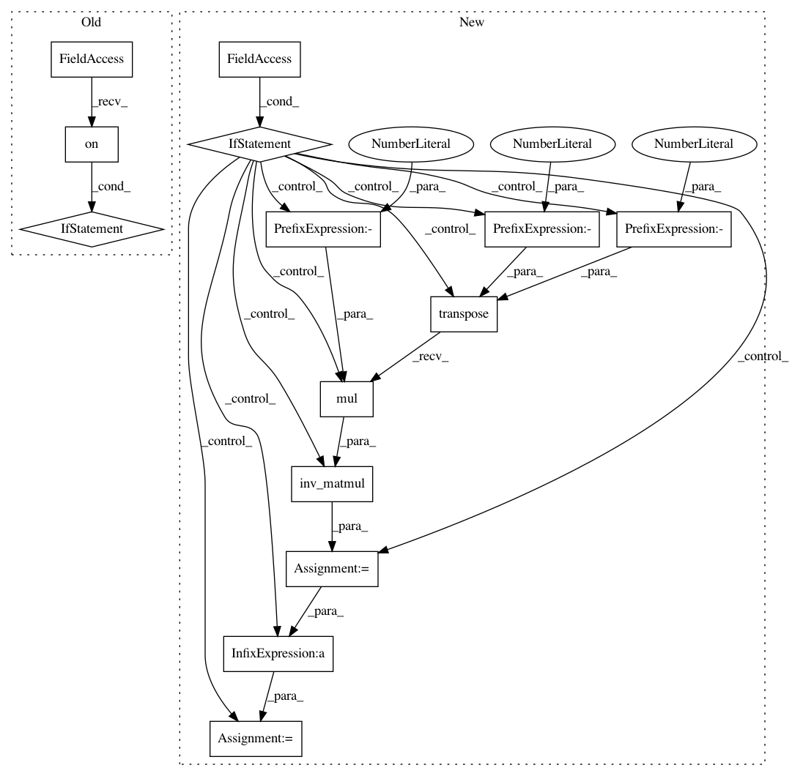

9233f51a05def9f3b2106231f7089295fb205ddc,gpytorch/variational/variational_strategy.py,VariationalStrategy,forward,#VariationalStrategy#Any#,93
Before Change
inv_products = induc_induc_covar.inv_matmul(induc_data_covar, left_tensors.transpose(-1, -2))
predictive_mean = torch.add(test_mean, inv_products[..., 0, :])
predictive_covar = RootLazyTensor(inv_products[..., 1:, :].transpose(-1, -2))
if beta_features.diagonal_correction.on():
interp_data_data_var, _ = induc_induc_covar.inv_quad_logdet(
induc_data_covar, logdet=False, reduce_inv_quad=False
)
diag_correction = DiagLazyTensor((data_data_covar.diag() - interp_data_data_var).clamp(0, math.inf))
predictive_covar = PsdSumLazyTensor(predictive_covar, diag_correction)
return MultivariateNormal(predictive_mean, predictive_covar)
def __call__(self, x):
if not self.variational_params_initialized.item():
After Change
inv_products = induc_induc_covar.inv_matmul(induc_data_covar, left_tensors.transpose(-1, -2))
predictive_mean = torch.add(test_mean, inv_products[..., 0, :])
predictive_covar = RootLazyTensor(inv_products[..., 1:, :].transpose(-1, -2))
if self.training:
interp_data_data_var, _ = induc_induc_covar.inv_quad_logdet(
induc_data_covar, logdet=False, reduce_inv_quad=False
)
data_covariance = DiagLazyTensor((data_data_covar.diag() - interp_data_data_var).clamp(0, math.inf))
else:
neg_induc_data_data_covar = induc_induc_covar.inv_matmul(
induc_data_covar, left_tensor=induc_data_covar.transpose(-1, -2).mul(-1)
)
data_covariance = data_data_covar + neg_induc_data_data_covar
predictive_covar = PsdSumLazyTensor(predictive_covar, data_covariance)
return MultivariateNormal(predictive_mean, predictive_covar)
In pattern: SUPERPATTERN
Frequency: 4
Non-data size: 14
Instances
Project Name: cornellius-gp/gpytorch
Commit Name: 9233f51a05def9f3b2106231f7089295fb205ddc
Time: 2019-04-15
Author: gpleiss@gmail.com
File Name: gpytorch/variational/variational_strategy.py
Class Name: VariationalStrategy
Method Name: forward
Project Name: cornellius-gp/gpytorch
Commit Name: 44826d877d755e7df1d681d680583911d6d2032e
Time: 2019-04-15
Author: balandat@fb.com
File Name: gpytorch/variational/whitened_variational_strategy.py
Class Name: WhitenedVariationalStrategy
Method Name: forward
Project Name: cornellius-gp/gpytorch
Commit Name: 9233f51a05def9f3b2106231f7089295fb205ddc
Time: 2019-04-15
Author: gpleiss@gmail.com
File Name: gpytorch/variational/whitened_variational_strategy.py
Class Name: WhitenedVariationalStrategy
Method Name: forward
Project Name: cornellius-gp/gpytorch
Commit Name: 44826d877d755e7df1d681d680583911d6d2032e
Time: 2019-04-15
Author: balandat@fb.com
File Name: gpytorch/variational/variational_strategy.py
Class Name: VariationalStrategy
Method Name: forward